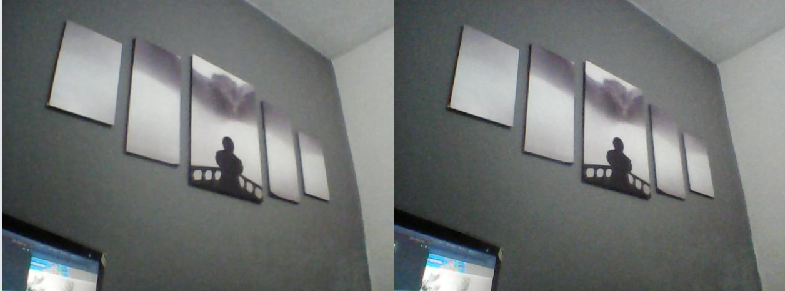

Laboratório 2 - Visão Computacional
Integrantes
Gustavo da Silva Santos RA: 11202131428
Henrique Vicente Ferraro Oliveira RA: 11201721650
Igor Santana Arruda RA: 11201722737
Data de realização dos experimentos
Os experimentos foram realizados no dia 02/07/2024
Data de publicação do relatório
O relatório foi publicado no dia 16/07/2024
Introdução
Este é o segundo relatório a ser desenvolvido para a disciplina de Visão Computacional da UFABC em 2024.2, ministrado pelo Prof. Dr. Celso S. Kurashima.
Ao longo dele serão realizados experimentos que abordam os conceitos básicos de Visão Computacional e Processamento de Imagens, como:
captura, distorção de imagens e calibração de imagens.
A correção da distorção radial em imagens é um aspecto crucial no processamento digital de fotografias, especialmente em ambientes onde a precisão geométrica
é essencial. A distorção radial, causada pelas características das lentes das câmeras, pode distorcer linhas retas e afetar a qualidade visual das imagens
capturadas. Este trabalho investiga os efeitos da distorção radial em fotografias e avalia a eficácia de técnicas de correção para melhorar a precisão e a
estética das imagens processadas. A correção da distorção radial não apenas visa restaurar a forma geométrica original das imagens, mas também aprimorar sua
utilidade em aplicações que demandam medidas precisas e representações visuais fiéis. Este estudo explora os métodos utilizados para a correção da distorção radial
Procedimentos experimentais, análise e discussão dos resultados
Parte 2
(A) O procedimento de calibração de câmera com imagens fornecidas de exemplo:
O programa “L2_cal.py” realiza a calibração de cameras conforme o exemplo
do item 2.b) acima. Execute este programa dentro da pasta descompactada
com as imagens fornecidas, e verifique o resultado.
Responda: liste todos os parametros obtidos, colocando-os nas formas de
matrizes e vetores (Matriz K, matriz R, vetor t, vetor dos coeficientes de
distorção).
Conforme tabela abaixo:

(B) Calibração da sua webcam com a captura de suas próprias imagens de
calibração: O programa “L2_chess.py” realiza a captura de multiplas imagens,
permitindo salvar em arquivos numerados, sendo uma imagem de cada vez
teclando uma tecla do teclado.
Altere no programa o nome do arquivo a ser gravado. Use o nome de um dos
integrantes da equipe. Obtenha entre 10 a 15 imagens do padrão de calibração
(tabuleiro):
Em seguida, com estas imagens obtidas, execute a calibração da sua câmera.
Responda: liste todos os parametros obtidos, colocando-os nas formas de
matrizes e vetores (Matriz K, matriz R, vetor t, vetor dos coeficientes de
distorção). Compare e analise as diferenças com o obtido no item anterior.
Conforme tabela abaixo:

(C) Realize a calibração de uma outra câmera pessoal:
Responda: liste todos os parametros obtidos, colocando-os nas formas de
matrizes e vetores. Compare e analise as diferenças com os resultados
anteriores.
Conforme tabela abaixo:

Realizando a comparação entre os resultados das três análises, foi possivel analisar que
(D) Correç ão de distorç ão de imagens: utilizando uma câmera calibrada, obtenha
imagens coloridas. Por exemplo use programa L2_chess.py. Elabore um
programa com a função cv.undistort(), fazendo uso dos parâmetros de
calibração obtidos desta câmera. Vide a referência [3].
Responda: apresente as imagens originais e as imagens corrigidas lado a
lado. Compare e analise os resultados da correção de distorção radial.
Abaixo
imagem antes da correção x Imagem após a correção:

Após a correção foi possível análisar que a distorção radial presente antes da correção é muito maior se comparada a imagem após a correção,
isso indica que o tratamento da distorção radial demonstrou ser eficaz na correção dessas deformações, resultando em imagens mais precisas
e esteticamente agradáveis. O procedimento de correção envolveu a aplicação de algoritmos que ajustam os pixels da imagem de forma a compensar
a distorção introduzida pela lente da câmera.
Os principais pontos observados no experimento são:
1. Melhoria na Precisão Geométrica: Após a correção da distorção radial, as linhas que anteriormente apareciam curvas foram endireitadas, melhorando
a precisão geométrica da imagem. Isso é particularmente importante em aplicações que requerem medidas precisas, como na cartografia e no levantamento
topográfico.
2. Aumento da Qualidade Visual: A remoção da distorção radial resultou em uma imagem visualmente mais agradável, sem a sensação de "curvatura".
Conclusão
Ao finalizar este relatório foi possível concluir que as atividades propostas ocorreram de acordo com o esperado.
Em conclusão, foi possível analisar que o tratamento da distorção radial em imagens é um procedimento fundamental para melhorar a precisão
e a qualidade das fotografias. A capacidade de corrigir essas deformações amplia as possibilidades de uso das imagens
capturadas, garantindo maior confiabilidade e utilidade em diversas áreas profissionais e acadêmicas.
Voltar para a Página Inicial